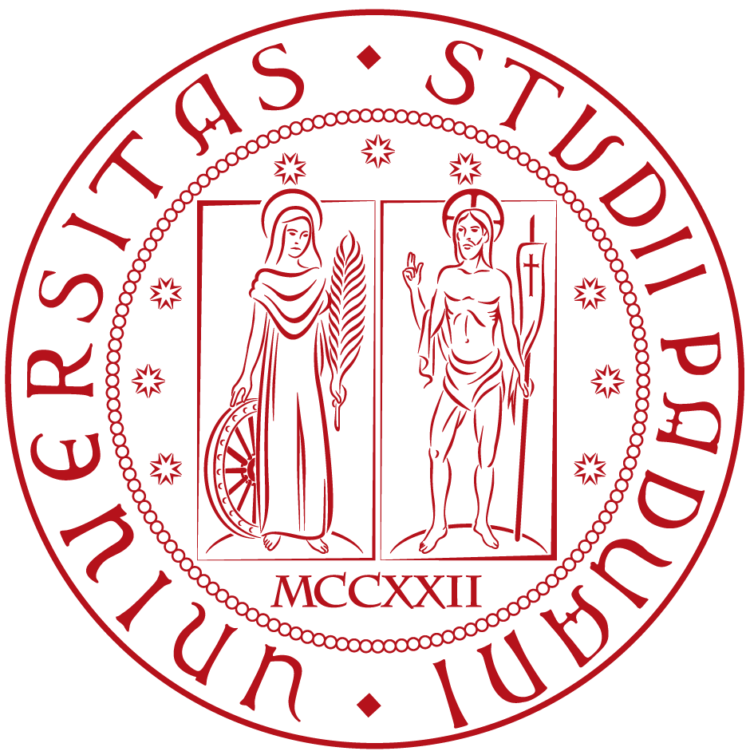
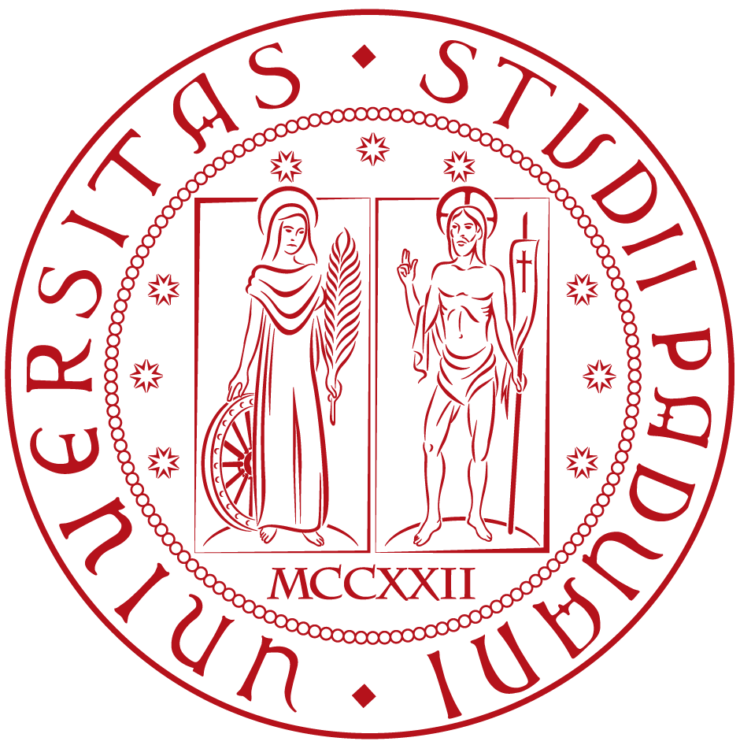

Ahsan Khodami
Advancing the understanding of visual perception, attention mechanisms, and cognitive processes through innovative research and methodological approaches
Research Focus
My research investigates the fundamental mechanisms underlying human visual perception and attention, combining cutting-edge neuroscience methods with computational modeling to understand how the brain processes visual information. I focus on developing innovative experimental paradigms and statistical methods that bridge the gap between basic research and practical applications in visual cognition.
Visual Attention
Investigating the mechanisms underlying selective attention in visual processing, including spatial and temporal dynamics of attentional allocation using EEG and behavioral measures.
Visual Science
Exploring fundamental principles of human vision, from low-level feature detection to high-level object recognition and scene understanding through psychophysical and neuroimaging approaches.
Methodology & Tools
Developing innovative experimental paradigms, statistical methods, and computational tools for vision and attention research using Python-based solutions.
Math For Psychologists
A comprehensive book designed specifically for Psychologists. Mathematics through Python programming, covering fundamental mathematical concepts with numerous practical examples, basic math principles, and extensive code implementations, providing a thorough understanding of mathematics
ReadSCIA
SCIA Single-Case Interpretation & Analysis
scia provides a comprehensive suite of statistical methods to analyze, interpret, and report data effectively. The package includes functionality to create and preprocess single-case data frames, fill in missing values, filter data, and compute key non-overlap and effect size metrics.
ReadMethodology & Tools
Developing innovative experimental paradigms, statistical methods, and computational tools for vision and attention research using Python-based solutions.
Professional Experience
-
Apr 2025 - PresentVisiting Researcher
Leading research projects on visual attention and developing new methodological approaches for EEG analysis in vision studies. Application of VR in Visual Science
-
Nov 2022 - Present
 
Research Fellow

Research FellowFellow Researcher under Marie Curie Fellowship at the Department of General Psychology at the University of Padua
May - PresentRemote Attendee ResearcherLeading research projects on visual attention and developing new methodological approaches for EEG analysis in vision studies. Application of VR in Visual Science